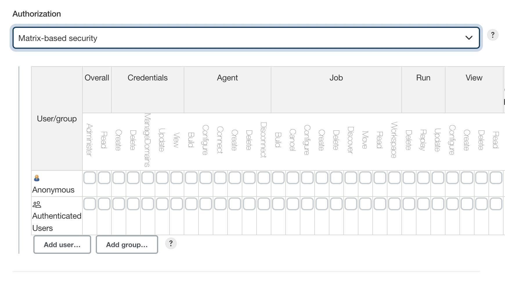

Managing Security
Table of Contents
Jenkins is used everywhere from workstations on corporate intranets, to high-powered servers connected to the public internet. To safely support this wide spread of security and threat profiles, Jenkins offers many configuration options for enabling, editing, or disabling various security features.
As of Jenkins 2.0, many of the security options were enabled by default to ensure that Jenkins environments remained secure unless an administrator explicitly disabled certain protections.
This section will introduce the various security options available to a Jenkins administrator, explaining the protections offered, and trade-offs to disabling some of them.
Enabling Security
Beginning with Jenkins 2.214 and Jenkins LTS 2.222.1, the "Enable Security" checkbox has been removed. Jenkins own user database is used as the default security realm.
In versions before Jenkins 2.214 and Jenkins LTS 2.222.1, when the Enable Security checkbox is checked, users can log in with a username and password in order to perform operations not available to anonymous users. Which operations require users to log in depends on the chosen authorization strategy and its configuration; by default anonymous users have no permissions, and logged in users have full control. The "Enable Security" checkbox should always be enabled for any non-local (test) Jenkins environment.
The "Configure Global Security" section of the web UI allows a Jenkins administrator to enable, configure, or disable key security features which apply to the entire Jenkins environment.
TCP Port
Jenkins can use a TCP port to communicate with inbound (formerly known as “JNLP”) agents, such as Windows-based agents. As of Jenkins 2.0, by default this port is disabled.
For administrators wishing to use inbound TCP agents, the two port options are:
-
Random: The TCP port is chosen at random to avoid collisions on the Jenkins controller. The downside to randomized ports is that they are chosen during the boot of the Jenkins controller, making it difficult to manage firewall rules allowing TCP traffic.
-
Fixed: The port is chosen by the Jenkins administrator and is consistent across reboots of the Jenkins controller. This makes it easier to manage firewall rules allowing TCP-based agents to connect to the controller.
As of Jenkins 2.217, inbound agents may instead be configured to use WebSocket transport to connect to Jenkins. In this case no extra TCP port need be enabled and no special security configuration is needed.
Access Control
Access Control is the primary mechanism for securing a Jenkins environment against unauthorized usage. Two facets of configuration are necessary for configuring Access Control in Jenkins:
-
A Security Realm which informs the Jenkins environment how and where to pull user (or identity) information from. Also commonly known as "authentication."
-
Authorization configuration which informs the Jenkins environment as to which users and/or groups can access which aspects of Jenkins, and to what extent.
Using both the Security Realm and Authorization configurations it is possible to configure very relaxed or very rigid authentication and authorization schemes in Jenkins.
Additionally, some plugins such as the Role-based Authorization Strategy plugin can extend the Access Control capabilities of Jenkins to support even more nuanced authentication and authorization schemes.
Security Realm
By default Jenkins includes support for a few different Security Realms:
- Delegate to servlet container
-
For delegating authentication a servlet container running the Jenkins controller, such as Jetty. If using this option, please consult the servlet container’s authentication documentation.
- Jenkins’ own user database
-
Use Jenkins’s own built-in user data store for authentication instead of delegating to an external system. This is enabled by default with new Jenkins 2.0 or later installations and is suitable for smaller environments.
- LDAP
-
Delegate all authentication to a configured LDAP server, including both users and groups. This option is more common for larger installations in organizations which already have configured an external identity provider such as LDAP. This also supports Active Directory installations.
|
This feature is provided by the LDAP plugin that may not be installed on your instance. |
- Unix user/group database
-
Delegates the authentication to the underlying Unix OS-level user database on the Jenkins controller. This mode will also allow re-use of Unix groups for authorization. For example, Jenkins can be configured such that "Everyone in the
developersgroup has administrator access." To support this feature, Jenkins relies on PAM which may need to be configured external to the Jenkins environment.
|
Unix allows an user and a group to have the same name. In order to
disambiguate, use the |
Plugins can provide additional security realms which may be useful for incorporating Jenkins into existing identity systems, such as:
Authorization
The Security Realm, or authentication, indicates who can access the Jenkins environment. The other piece of the puzzle is Authorization, which indicates what they can access in the Jenkins environment. By default Jenkins supports a few different Authorization options:
- Anyone can do anything
-
Everyone gets full control of Jenkins, including anonymous users who haven’t logged in. Do not use this setting for anything other than local test Jenkins controllers.
- Legacy mode
-
Behaves exactly the same as Jenkins <1.164. Namely, if a user has the "admin" role, they will be granted full control over the system, and otherwise (including anonymous users) will only have the read access. Do not use this setting for anything other than local test Jenkins controllers.
- Logged in users can do anything
-
In this mode, every logged-in user gets full control of Jenkins. Depending on an advanced option, anonymous users get read access to Jenkins, or no access at all. This mode is useful to force users to log in before taking actions, so that there is an audit trail of users' actions.
- Matrix-based security
-
This authorization scheme allows for granular control over which users and groups are able to perform which actions in the Jenkins environment (see the screenshot below).
- Project-based Matrix Authorization Strategy
-
This authorization scheme is an extension to Matrix-based security which allows additional access control lists (ACLs) to be defined for each project separately in the Project configuration screen. This allows granting specific users or groups access only to specified projects, instead of all projects in the Jenkins environment. The ACLs defined with Project-based Matrix Authorization are additive such that access grants defined in the Configure Global Security screen will be combined with project-specific ACLs.
|
Matrix-based security and Project-based Matrix Authorization Strategy are provided by the Matrix Authorization Strategy Plugin and may not be installed on your Jenkins. |
For most Jenkins environments, Matrix-based security provides the most security and flexibility so it is recommended as a starting point for "production" environments.

Figure 1. Matrix-based security
The table shown above can get quite wide as each column represents a permission provided by Jenkins core or a plugin. Hovering the mouse over a permission will display more information about the permission.
Each row in the table represents a user or group (also known as a "role"). This includes special entries named "anonymous" and "authenticated." The "anonymous" entry represents permissions granted to all unauthenticated users accessing the Jenkins environment. Whereas "authenticated' can be used to grant permissions to all authenticated users accessing the environment.
The permissions granted in the matrix are additive. For example, if a user "kohsuke" is in the groups "developers" and "administrators", then the permissions granted to "kohsuke" will be a union of all those permissions granted to "kohsuke", "developers", "administrators", "authenticated", and "anonymous."
Markup Formatter
See Markup Formatter.
CSRF Protection
See CSRF Protection.
Please submit your feedback about this page through this quick form.
Alternatively, if you don't wish to complete the quick form, you can simply indicate if you found this page helpful?
See existing feedback here.